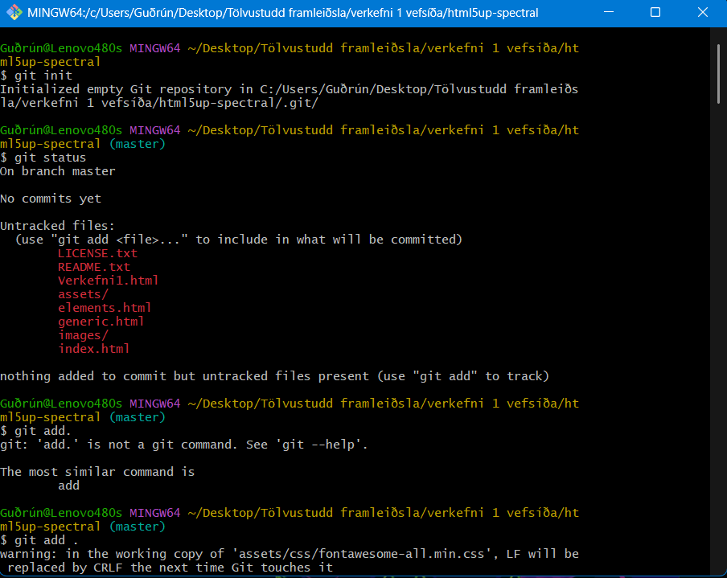

Verkefni 1
Vefsíðugerð
Undirbúningur
Ég byrjaði á því að horfa á fyrstu tvö kennslumyndböndin og sótti Brackets til að vinna síðuna eins og kennarinn mældi með. Einnig náði ég í Git Bash. Svo hlóð ég niður vefsíðusniðmáti frá Html5Up sem hét Spectral og notaði það. Ég valdi það því mér fannst það stílhreint og það sýndi helstu upplýsingar á skýran hátt og bauð upp á falinn (dropdown) sidebar.
Gerð vefsíðu
Þá fór ég að íslenska það sem ég gat og skipta út texta. Síðan gerði ég afrit af generic.html fyrir síðuna fyrir verkefni 1 og skýrði það "Verkefni1.html" og vísaði í það á ýmsum stöðum á síðunni með hlekk. Ég ákvað að hafa verkefni 2 - 3 og lokaverkefnið á forsíðunni þó svo ég væri ekki byrjaður á þeim til að fá hugmynd að því hvernig síðan myndi líta út seinna meir.
Ég lét rauða takkann sem blasir við efst á forsíðunni opna ferilskránna mína á pdf formi í nýjum flipa svo auðvelt sé að skoða hana nánar og hala henni niður. Einnig breytti ég öllu undir "menu" flipanum hægra megin og skýrði hann “valmynd”. Svo breytti ég footer-inum og hafði netfangið mitt, github og ferilskránna mína þar. Þar tók ég innblástur frá vefsíðu hjá Arnóri Daða Rafnssyni frá árinu 2024 til að fá rétt logo en hann notaði sama sniðmát og ég.
Ég tók út fyrsta og seinasta flipann á forsíðunni þar sem ég taldi þá vera óþarfi fyrir mína síðu sem ég vildi að væri hnitmiðuð og beindist aðallega að verkefnum áfangans.
Uppsetning á Github og myndum
Til að setja inn myndir setti ég þær í sömu möppu og GitHub les. Ég gat breytt stærðinni með því að stilla gildið á "width" og notaðist við þessa skipun til að hafa myndirnar fyrir miðju:
<div class="row aln-center">
<img src="images/..." width="..." alt="...">
</div>
Ég bjó til nýtt repository á Github heimasíðunni minni undir nafninu TolvustuddFramleidsla. Ég horfði á myndbönd 3 og 4 og þetta myndband af netinu til að sjá hvernig ætti að hlaða síðunni á Github. Svo fór ég í möppuna sem hýsti síðuna og valdi "Open Git Bash here" og þá kom upp þessi gluggi.

Notaðar voru eftirfarandi skipanir til að hlaða inn skránnum. Kóðinn keyrði við fyrstu tilraun án hindrana og þetta gekk vel fyrir sig.
$ git init
$ git add .
$ git commit -m "Lýsing á breytingu" .
$ git remote add origin https://github.com/kristofervg/TolvustuddFramleidsla.git
$ git push .
Væntingar til áfangans
Ég hlakka til að læra meira um vefsíðugerðina en þó sérstaklega praktísku hliðina við tölvustudda framleiðslu sem ég hef ekki lært áður. Það verður án efa lærdómsríkt að beita nýjum hugsunarhætti til að hanna og framleiða hluti frá grunni með fræsun og þrívíddarprentun.
Ég er ekki enn kominn með hugmyndir að lokaverkefni fyrir áfangann en það væri skemmtilegt að búa til einhvern gagnlegan hlut sem hefði raunverulegt notagildi.